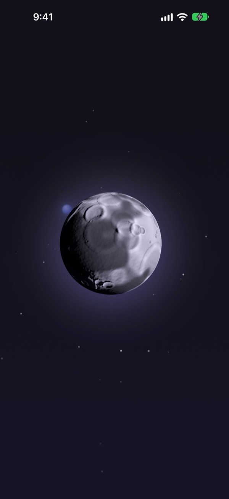
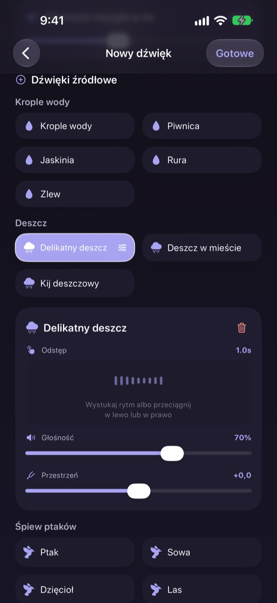
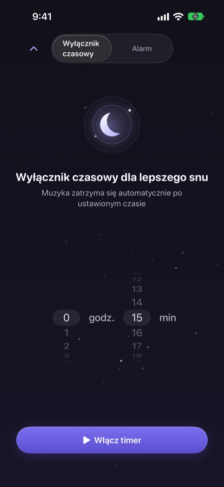
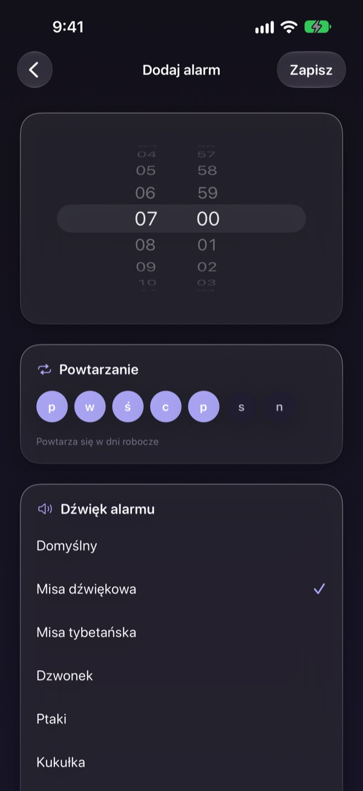
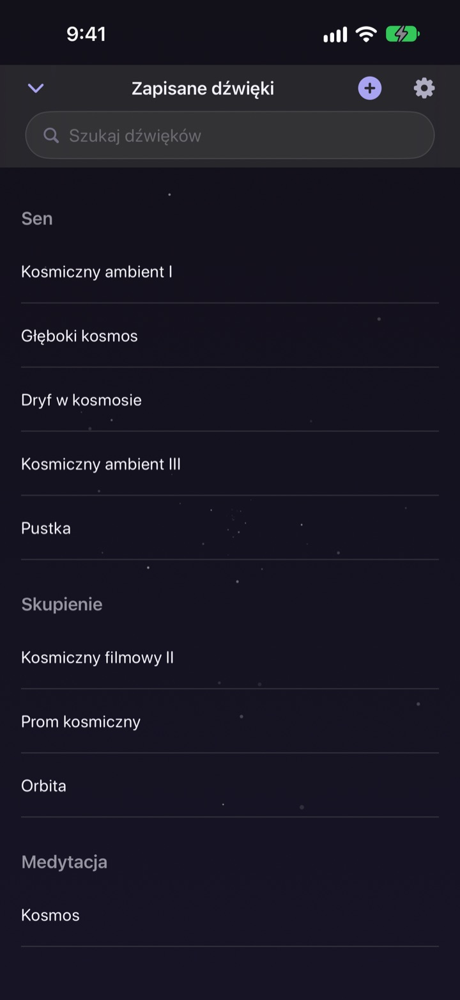

Nie trać nocy
na szukanie właściwego dźwięku
Raz nałóż na siebie deszcz, krople wody i misę tybetańską, tworząc własny dźwięk. Od następnej nocy wystarczy dotknąć księżyca.
Wszystkich dźwięków posłuchasz za darmo. Na iPhone’a i iPada.

Zdarzyło ci się przez godzinę szukać czegoś do zasypiania?
Deszcz jest zbyt monotonny, fale za głośne, a włączony film w środku nocy przerywa reklama. W Dalbit sam nakładasz ulubione dźwięki, aż pasują dokładnie do ciebie, i chowasz je za jednym księżycem.
Zbuduj dźwięk z warstw
Układaj deszcz, krople wody, śpiew ptaków i misy tybetańskie. Dla każdej warstwy ustaw głośność, częstotliwość i miejsce, z którego ją słychać, a pod spód dodaj fale albo fortepian jako muzykę w tle.
Nazwij miks, zapisz go i wracaj do niego każdej nocy.

Cichnie, nie budząc cię
Wyłącznik czasowy nigdy nie ucina dźwięku. Powoli go ścisza, żeby koniec cię nie obudził.
Dźwięk gra dalej przy wygaszonym ekranie lub w innej aplikacji, a jeśli niczego nie dotykasz, ekran sam się przyciemnia.

Rano budzi łagodnie
Ustaw alarmy z dźwiękiem misy śpiewającej, misy tybetańskiej, ptaków albo kukułki i powtarzaj je w wybrane dni tygodnia.

Jeden księżyc do wszystkiego
Dotknij księżyca, aby odtworzyć, i jeszcze raz, aby wstrzymać. Przesuń w bok, aby zmienić dźwięk, w górę po wyłącznik czasowy, w dół po zapisane dźwięki.
Gdy dźwięk ci pasuje, przytrzymaj księżyc, aby dodać go do ulubionych.

Zaczynasz w trzech krokach
- 1
Dotknij księżyca
Otwórz aplikację, dotknij księżyca i dźwięk od razu rusza.
- 2
Przesuń w bok
Przewijaj, aż trafisz na dźwięk, który ci odpowiada.
- 3
Ustaw wyłącznik i połóż się
Przesuń w górę, wybierz czas, a potem dźwięk powoli wygaśnie.
Co robi księżyc
- Dotknięcie
- odtwórz, wstrzymaj
- Przesunięcie w bok
- następny dźwięk
- Przesunięcie w górę
- wyłącznik czasowy i alarmy
- Przesunięcie w dół
- zapisane dźwięki
- Przytrzymanie
- dodaj do ulubionych
Wstrzymać i wznowić możesz też przyciskami odtwarzania na ekranie blokady.
Słuchanie jest darmowe. Premium służy do tworzenia więcej.
Za darmo
- Wszystkie dźwięki
- Nakładanie dźwięków we własny miks
- Do trzech zapisanych miksów
- Wyłącznik czasowy ze ściszaniem
- Alarmy z łagodnymi dźwiękami
- Ulubione
Dalbit Premium
- Twórz i zapisuj dowolnie wiele miksów
Miesięczna subskrypcja odnawiana automatycznie, z darmowym okresem próbnym
Subskrypcja odnawia się automatycznie, jeśli nie anulujesz jej co najmniej 24 godziny przed końcem bieżącego okresu, a opłata jest pobierana po zakończeniu okresu próbnego. Obowiązują standardowe warunki użytkowania Apple (EULA).
Najczęstsze pytania
Jak odtwarzać i zmieniać dźwięki?
Dotknij księżyca na ekranie głównym, aby odtworzyć, i jeszcze raz, aby zatrzymać. Przesuń w bok po inny dźwięk, w górę po wyłącznik czasowy, w dół po swoją bibliotekę.
Czy dźwięk ucichnie po wygaszeniu ekranu?
Nie. Gra dalej przy wygaszonym ekranie i w innej aplikacji. Aby go zatrzymać, dotknij ponownie księżyca albo użyj przycisków na ekranie blokady.
Co się dzieje, gdy wyłącznik czasowy się skończy?
Dźwięk nie urywa się nagle. Stopniowo cichnie i dopiero wtedy się zatrzymuje, żeby cię nie obudzić.
Alarm nie dzwoni.
Przy tworzeniu pierwszego alarmu aplikacja prosi o zgodę. Sprawdź, czy jest włączona w Ustawienia > Dalbit.
Gdzie zapisują się moje miksy?
Miksy, alarmy i ustawienia są tylko na tym urządzeniu. Po usunięciu aplikacji znikają razem z nią.
Z czego mogę korzystać za darmo?
Ze wszystkich dźwięków, nakładania warstw i maksymalnie trzech własnych miksów. Wyłącznik czasowy i alarmy też są darmowe. Premium znosi limit miksów.
Jak anulować subskrypcję?
Przejdź do Ustawienia > Konto Apple > Subskrypcje, wybierz Dalbit i anuluj. Jeśli nie anulujesz co najmniej 24 godziny przed końcem bieżącego okresu, odnowi się automatycznie.
Zmieniłem telefon i subskrypcja zniknęła.
Zaloguj się tym samym kontem Apple, otwórz ekran subskrypcji w Dalbit i stuknij Przywróć zakupy.
Jak zgłosić błąd albo zaproponować funkcję?
Wyślij opinię z ustawień aplikacji albo napisz na adres poniżej. Zwykle odpowiadamy w ciągu kilku dni.
Pytania lub pomysły? Napisz na mizzking75@gmail.com.